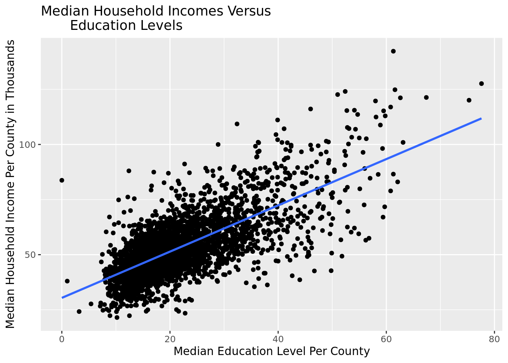
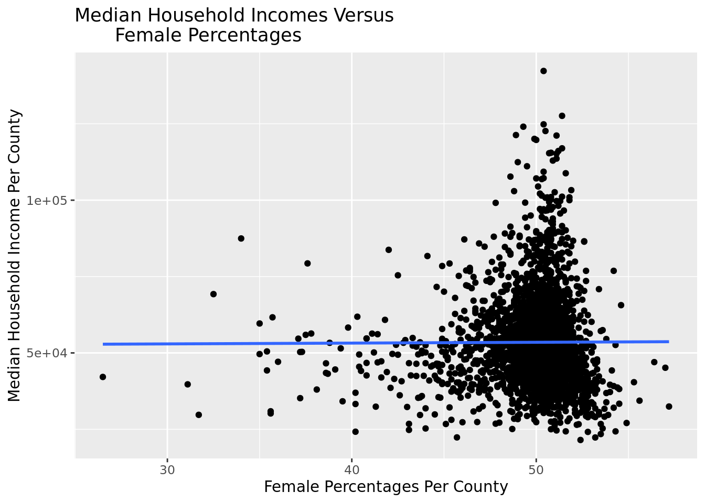
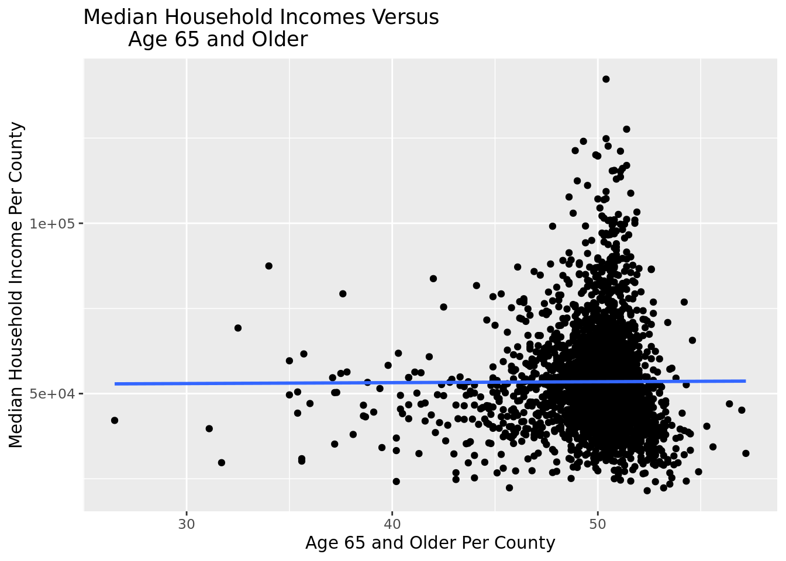
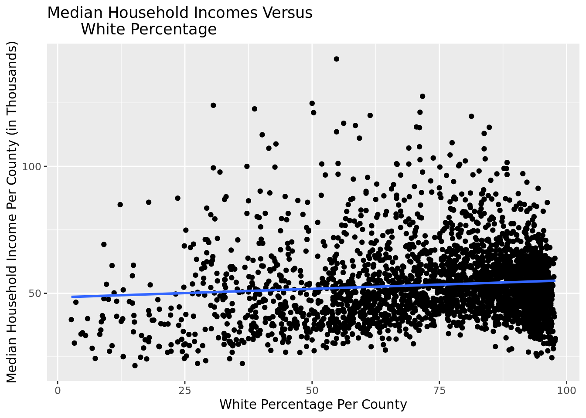

library(tidyverse)
library(usmap)
library(geofacet)
library(tidymodels)County Demographics: What Factors Influence Career Outcomes
Report
Introduction
There are persistent problems and injustices in the United States around educational and income inequality. For our research project, we are going to examine what factors influence career outcomes (one’s education and income) by looking at data from over 3,000 counties in the United States.
In many cases, these education and income are very interrelated for families and counties causing or exacerbating a vicious cycle that can be hard to break. In America, there are many root causes that contribute to such a cycle, and it is important they are clearly researched and evaluated, so changes can start to be made to populations and counties that need them most. There are many factors that can influence one’s career outcomes, but some particularly important ones are education level, ethnicity, gender, and state. According to the APLU, people who hold college degrees are twice as likely to get a job and make around an extra $1.2 million over the course of their life (APLU). Black or Latino families make around 50% of what white households do, according to the Federal Reserve Board (Federal Reserve Board). The gender pay gap still persists, with women earning an average of 82% of what men do (PEW Research Center). On the state level, various factors such as funding per county and class disparities can impact income inequality as well. There are intersections in everyone’s identities and therefore the counties identities as well, and when combined, can have even greater impacts on career outcomes, so knowing which specific identities are most vulnerable is also a key step to making actionable change. We believe counties with residents with higher levels of education, a higher white population, more males, and live in states with greater funding and job opportunities will have better career outcomes. Since this data has been gathered by the US Census Bureau, a government organization, there should be no ethical concerns. They adhere to strict privacy policy guidelines to ensure a confidential, respectful, and transparent experience for participants when collecting data (United States Census Bureau).
https://www.census.gov/about/policies/privacy/data_stewardship/our_privacy_principles.html
Data
The dataset we are analyzing is from The Collection of Really Great, Interesting, Situated Datasets (CORGIS) Project. Furthermore, it was collected using 2010 to 2019 data from the United States Census Bureau. It should be noted that some of the estimates came from sample data. The dataset includes a wide variety of observations for various counties in the United States. In order to best serve our research question, we will focus on the statistics such as education level, ethnicity, age, gender, and state. The data is largely qualitative and in terms of what percentage of the county fits a certain description such as being a high school graduate or white.
Methodology
counties <- read_csv("data/county_demographics.csv")Renaming Variables
filtered_counties <- counties |>
rename(income = `Income.Median Houseold Income`,
education = `Education.Bachelor's Degree or Higher`,
percent_female = `Miscellaneous.Percent Female`,
age = `Age.Percent 65 and Older`,
percentage_white = `Ethnicities.White Alone\t not Hispanic or Latino`) |>
select(County, State, income, education, percent_female, age, percentage_white)Graph of Income Versus State
statepop <- statepop
state_data <- counties |>
group_by(State) |>
summarize(median_income = median(`Income.Median Houseold Income`))
maps_dataframe <- full_join(statepop, state_data, by = c("abbr" = "State"))
plot_usmap(data = maps_dataframe,
values = "median_income",
labels = TRUE) +
labs(fill = "Median Household Income",
title = "Household Incomes Per State") +
scale_fill_viridis_c() +
theme(legend.position = "bottom") 
Graphs of Income Versus Different Variables
Income vs. Education Level
filtered_counties |>
ggplot(
aes(x = education, y = income)) +
geom_point() +
labs(x = "Median Education Level Per County",
y = "Median Household Income Per County",
title = "Median Household Incomes Versus
Education Levels") +
geom_smooth(method = "lm" , se = F) 
Income vs. Percent Female
filtered_counties |>
ggplot(
aes(x = percent_female, y = income)) +
geom_point() +
labs(x = "Female Percentages Per County",
y = "Median Household Income Per County",
title = "Median Household Incomes Versus
Female Percentages") +
geom_smooth(method = "lm" , se = F) 
Income vs. Age 65 and Older
filtered_counties |>
ggplot(
aes(x = percent_female, y = income)) +
geom_point() +
labs(x = "Age 65 and Older Per County",
y = "Median Household Income Per County",
title = "Median Household Incomes Versus
Age 65 and Older") +
geom_smooth(method = "lm" , se = F) 
Income vs. Percentage White
filtered_counties |>
ggplot(
aes(x = percentage_white, y = income)) +
geom_point() +
labs(x = "White Percentage Per County",
y = "Median Household Income Per County",
title = "Median Household Incomes Versus
White Percentage") +
geom_smooth(method = "lm" , se = F) 
Models (Linear Regressions)
Baseline Model
model_baseline <- linear_reg() |>
set_engine("lm") |>
fit(income ~ State, data = filtered_counties)
linear_reg() |>
set_engine("lm") |>
fit(income ~ State, data = filtered_counties) parsnip model object
Call:
stats::lm(formula = income ~ State, data = data)
Coefficients:
(Intercept) StateAL StateAR StateAZ StateCA StateCO
68491.5 -24916.6 -26254.8 -19501.5 -777.9 -9696.7
StateCT StateDC StateDE StateFL StateGA StateHI
10709.9 17928.5 -2503.5 -17201.3 -21261.8 7937.1
StateIA StateID StateIL StateIN StateKS StateKY
-11231.9 -17569.8 -11835.2 -12624.9 -15626.8 -23609.3
StateLA StateMA StateMD StateME StateMI StateMN
-23617.5 9254.1 9050.1 -14922.7 -16683.1 -6835.0
StateMO StateMS StateMT StateNC StateND StateNE
-20395.4 -28878.4 -17507.5 -20072.0 -6016.1 -13796.5
StateNH StateNJ StateNM StateNV StateNY StateOH
816.7 14395.7 -24768.5 -8371.8 -6006.9 -12691.2
StateOK StateOR StatePA StateRI StateSC StateSD
-19780.8 -14538.4 -11435.4 7622.9 -22883.2 -13870.1
StateTN StateTX StateUT StateVA StateVT StateWA
-21324.5 -15643.9 -5431.9 -7734.7 -8731.7 -9098.0
StateWI StateWV StateWY
-10185.6 -23599.2 -6662.8 glance(model_baseline)$r.squared[1] 0.2923676Model with State and Education
model_with_education <- linear_reg() |>
set_engine("lm") |>
fit(income ~ State + education, data = filtered_counties)
glance(model_with_education)$r.squared[1] 0.6129233Model with State and Percent Female
model_with_percent_female <- linear_reg() |>
set_engine("lm") |>
fit(income ~ State + percent_female, data = filtered_counties)
glance(model_with_percent_female)$r.squared[1] 0.2956188Model with State and Age 65 and Older
model_with_age <- linear_reg() |>
set_engine("lm") |>
fit(income ~ State + age, data = filtered_counties)
glance(model_with_age)$r.squared[1] 0.3746036Model with State and Percentage White
model_with_ethnicity <- linear_reg() |>
set_engine("lm") |>
fit(income ~ State + percentage_white, data = filtered_counties)
glance(model_with_ethnicity)$r.squared[1] 0.2985728We first summarized our data (finding median income, education levels, etc.) and manipulated it (using full_join) in order to create Choropleth maps of the US. Each state is colored based on the median values of different variables, including percent of elderly population, percent female population, median education levels, and median household income. We chose to create these maps as they helped us visualize geographic patterns within the US based on the spectrum of colors by state. Finally, we used linear regression analysis to model the relationships between variables like age and income.
Results
First of all, according to the map visualization, median household income levels appear to be the lowest in the southern regions, particularly in the southeast. They tend to be the highest in the northeast and west. This trend is very similar for the map visualization of median education levels, but the difference between the regions is not as extreme. There are very high median education levels in the northeast compared to the rest of the country.
Additionally, within each state’s population, there seems to be a lower percent of females in the northwest and west (~48% to 50%), while there seems to be a higher percent of females comparatively in the east and southeast regions.
The percent elderly in the US among states seems to be very scattered among regions. Among all states, Montana seems to have the greatest elderly population while Utah and Alaska seem to have the lowest. It seems that states in the northwest seem to have the greatest elderly populations, although the correlation among region seems to be weak.
We can see the relationships between income, age, gender, and education below through the following linear regression models.
\(\widehat{Median\_Household\_Income} = 61790 - 799.7*Percent\_65\_and\_Older + 150.2*Percent\_Female\)
Holding percent of women in each county constant, for a one percent increase in percent of county citizens 65 years or older, we estimate a mean change in median household income of -799.70 dollars. Therefore, as elderly population increases, income decreases.
Holding percent of citizens 65 years or older, for a one percent increase in percent of women in each county, we estimate a mean change in median household income of $150.20.
According to the mean summary statistics of percentage of persons of white ethnicity per county, there is a decrease in median household income between above average percentage of white persons and below average percentage of white persons. There is a decrease of $1945.99 in median household income.
\(\widehat{Median\_Household\_Income} = 30418 + 1049*Percent\_College\_Degree\)
For a one percent increase in percent of county citizens with a college degree, we estimate a mean change in median household income of 1049 dollars.